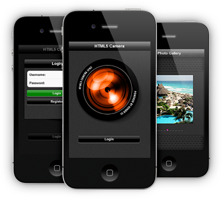
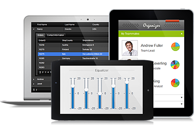

SmartSite Ver 2.2 智能网站管理系统
采用前后台完全分离技术，通过标签（支持标签循环嵌套、判断标签、自定义标签、文件循环嵌套等）加模板技术.全站生成纯静态页。

var oSlide = new Slider("#slideCustom", { trigger: "click", auto: true });
var done = function(){ oSlide.unlock() };
oSlide.init(function(cur, old){
// 网页加载时默认会执行一次
if(old === cur) return;
var that = this,
$ele = that.ele,
$lists = that.lists,
$oldContent = $lists.eq(old),
$oldItems = $oldContent.find(".moveItem"),
$curContent = $lists.eq(cur),
$curItems = $curContent.find(".moveItem"),
durationOld = 1000,
durationCur = 800,
baseTime = 200,
nextDelay = $oldItems.length * baseTime + durationOld - 300;
// 锁定状态
that.lock();
// 执行现有切换项的运动隐藏
$oldItems.each(function(index, ele){
var $ele = $(ele), time = index === 0 ? 0 : baseTime * (index + 1);
$ele.delay(time).animate({opacity: 0.4, left: -Math.floor($ele.offset().left + $ele.width())}, durationOld, "easeInOutBack");
});
// 负责下一个切换项的显示处理
setTimeout(function(){
var winWidth = $(window).width(),
length = $curItems.length;
//隐藏上一个切换项
$oldContent.hide();
$oldItems.stop().css("left", 0);
//设置本次切换项的默认状态
$curContent.show();
$curItems.css("left", function(){
return (winWidth - $(this).offset().left) + "px";
});
//执行运动
$curItems.each(function(index, ele){
var $ele = $(ele), time = index === 0 ? 0 : baseTime * (index + 1);
$ele.css("opacity", 0).delay(time).animate({opacity: 1, left: 0}, durationCur, "easeOutBack", (index === length - 1 ? done : undefined));
});
}, nextDelay);
// 背景动画
var position = 200 * (cur + 1);
$ele.animate({"background-position-x": position}, nextDelay + 1000);
});